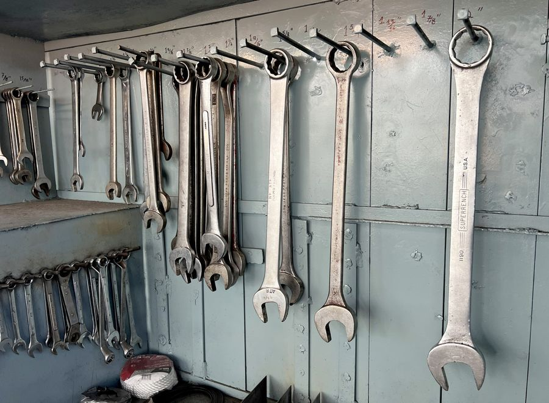

Musluk damlatıyor
İşe başlamadan önce ara musluğu ya da ana vanayı kapatın. Söktüğünüz conta ya da kartuşu yanınızda getirmek, doğru ölçüyü bulmanın en kısa yoludur.
Bir altıgene dokunun, reyon levhası değişsin. Petekteki fotoğraflar temsili görseldir.
Seçili reyon
Hırdavat ve el aletleri
Çekiçten matkap ucuna, tornavidadan şerit metreye: evdeki tamir çantasının eksikleri.
Sarıyer Pınar Mahallesi'nde, Çamlıbel Caddesi No:73'te bir nalbur ve yapı market. Vida ve dübelden boyaya, çimentodan kabloya, musluktan kilide: evin küçük tamiri de tadilatın malzemesi de burada sorulur.
Her gün 08:00–21:00
5,0 · 290 Google yorumuYapacağınız işi seçin; o iş için genellikle gereken malzemeler aşağıda. İşaretlediklerinizi tek dokunuşla malzeme listenize ekleyin, sonra hepsini birden WhatsApp'tan sorun.
İşe başlamadan önce ara musluğu ya da ana vanayı kapatın. Söktüğünüz conta ya da kartuşu yanınızda getirmek, doğru ölçüyü bulmanın en kısa yoludur.
Prizin ve anahtarın tam üstüne, altına ya da yan hizasına delik açmayın; duvarın içinden kablo geçiyor olabilir. Duvarınıza uygun dübeli dübel seçiciyle bulun.
Kaç litre boya gerektiğini boya hesaplayıcıyla bulun; sonucu doğrudan listenize ekleyebilirsiniz.
Sigortayı kapatın ve kontrol kalemiyle hattın enerjisiz olduğundan emin olun. Elektrik işinden emin değilseniz yetkili bir elektrikçiye yaptırın.
Barelin iki ölçüsü vardır (ör. 30/40). Yeni bareli almadan önce eskisini ölçün ya da söküp getirin; nasıl ölçüleceği Reyonlar sayfasında.
Eski silikonu tamamen kazıyın, yüzeyi temizleyip iyice kurulayın. Yeni silikon kuru ve tozsuz yüzeye daha iyi tutunur; kuruma süresi için tüpün üzerindeki talimata bakın.
Musluk ağzının ölçüsünü (1/2" ya da 3/4") bilmek doğru rakoru seçmeyi kolaylaştırır. Emin değilseniz musluğun fotoğrafını gönderin.
Torba ürünlerde karışım oranı ve su miktarı için ambalajdaki talimata uyun. Büyük ihtiyaçlarda miktarı listeye yazıp stok durumunu sorun.
Kalemler genel bir başlangıç listesidir; işinize göre değişebilir. Stok ve çeşit için sorun, bilgi verelim.
 Temsili görsel
Temsili görselKırılan vidanın, sızdıran rakorun, yanan ampulün adını bilmek zorunda değilsiniz. Fotoğrafını WhatsApp'tan gönderin; aynısını ya da yerine geçecek muadilini birlikte bulalım. İyi bir fotoğraf için dört şey yeter:
Haftanın yedi günü aynı saatlerde açığız. Puanımız ve yorum sayımız Google Haritalar'daki değerlendirmelerden geliyor.
Her gün 08:00–21:00
Harita ve yol tarifiReyonlar sayfasında her reyonun sık sorulan ürünleri ve malzemeyi doğru seçmenize yardım eden kısa rehberler var. Hesaplayıcıların sonucunu tek dokunuşla listenize ekleyebilirsiniz.
Beton, tuğla, gazbeton ya da alçıpan: duvarınıza ve asacağınız yüke göre dübel türü.
Odanızın ölçülerinden boyanacak alanı ve yaklaşık litre ihtiyacını bulun.
Aydınlatma ve priz hattı için yaygın kesitler; E27, E14, GU10 farkı.
1/2", 3/4", 1" bağlantıların karşılıkları ve teflon bant sarma yönü.
Kapı bareli değiştirmeden önce iki ölçüyü doğru almanın yolu.

Temsili görsel Temsili görsel
Temsili görselParçanın fotoğrafını WhatsApp'tan gönderin; mümkünse yanına bir ölçü koyun. Aynısını ya da yerine geçecek muadilini birlikte bulalım. Eski parçayı dükkâna getirmeniz de işe yarar.
Gerek yok. Malzeme listesi sayfasında ürünleri satır satır yazın, adet ya da ölçüsünü ekleyin. Liste tek bir WhatsApp mesajı olarak hazırlanır; göndermeden önce mesajı görürsünüz.
Ürünleri ve miktarlarını listeye yazıp gönderin; stok ve fiyat bilgisini mesajla sorabilirsiniz. Şantiye ya da tadilat gibi büyük ihtiyaçlarda miktarı net yazmak işinizi kolaylaştırır.
Haftanın her günü 08:00–21:00 arası açığız. Sayfadaki altıgen işaret, şu an açık olup olmadığımızı İstanbul saatine göre gösterir.
Pınar Mahallesi, Çamlıbel Caddesi No:73, 34460 Sarıyer/İstanbul. Haritayı ve yol tarifini İletişim sayfasında bulabilirsiniz.
Evet. Telefonla arayabilir ya da WhatsApp'tan yazabilirsiniz. Ürünün ölçüsünü ve adedini yazmanız cevabı kolaylaştırır.
Ürün ve adetleri yazın, fotoğrafını göndereceğiniz parçaları işaretleyin; mesaj hazır olsun, siz yalnızca gönderin.